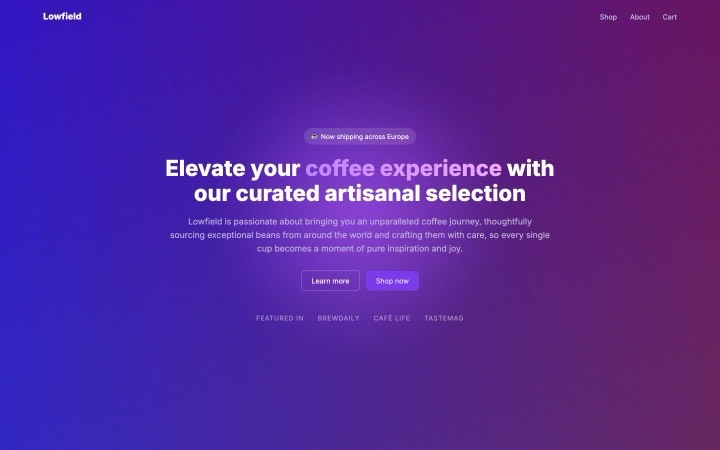
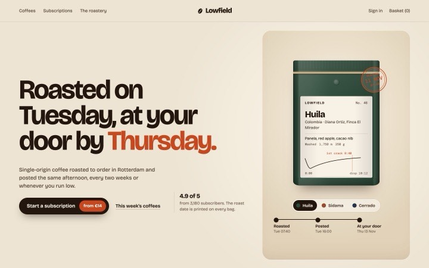
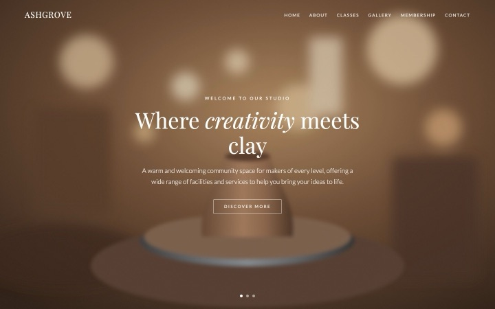
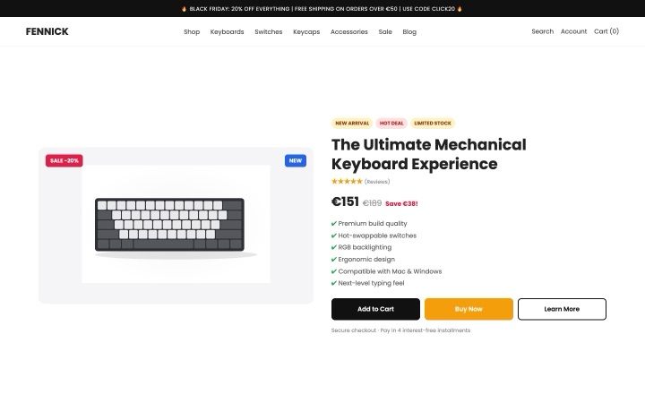
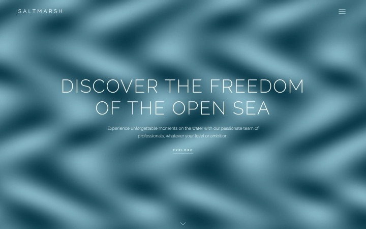

Rebuild the first screen around one true moment, then prove it.
An agent skill for React / Next.js + Tailwind. It audits the hero you have in a real browser, rebuilds it mostly from OriginKit components, customised around one moment that shows what the product actually does, and measures it again, so every claim in the hand-off is a number.
01MeasureLCP and what holds it, layout shift, blocking time, headline, CTAs, contrast and fit, on a throttled phone, tablet and desktop.
02DiagnoseClarity, action, legibility, speed and the template tells, each tied to a measurement or a screenshot.
03RebuildOne signature moment taken from the product's truth, built from OriginKit components on your design system.
04ProveThe same audit again, and a before/after report with a slider and the numbers for the PR.
Rebuilds
Each "before" is a hero people really ship: the template with a gradient word and a purple glow, a stock photo under thin white type, a cluttered shop split, a background video with no poster. Each "after" keeps the product's truth and gives it one moment you can watch. Measured on Slow 4G with a 4× slower CPU, median of three loads. The products and people are made up.
Lowfield
A coffee roaster's subscriptionEditorial type and brand object


BeforeAfter
The bag proves the promise. Its label plots the real roast curve to first crack, the roast date is stamped, and the roast-to-door ticket runs Tuesday to Thursday. Pick another origin.
A ceramics studio's kiln bookingLive demo, a flame as the material

BeforeAfter
The kiln proves the promise. The open shelf is taken in a scheduled gas firing, the controller climbs the real bisque curve, the witness cones bend at cone 04 and the tag gets its unload time. Switch to the glaze firing.
A keyboard maker's one productLive demo of a physical product

BeforeAfter
The board is the product page. The Sixty types “hello” by itself once, then takes your own keys; each finish swaps the switch, its sound and the spec tag.
A dinghy school's lessonsShader backdrop driven by a number

BeforeAfter
The sea is the forecast. Swell height and chop come from each day's wind. Sunday's 19 knots is over the 14-knot beginner limit, so the lesson slip moves the lesson to Monday.
Lowfield's after is plain HTML, CSS and a little JavaScript, so it runs live here. Ashgrove, Fennick and Saltmarsh are built from OriginKit components (a flame shader; a 3D keyboard and a keycap button; a wave shader and a water-fill button), added with the owner's own login and customised to each product. Their code isn't published, so their cards show a recording of the after page; the reports were measured on the private builds. In your project the skill fetches the same kind of components with your OriginKit login or MCP.